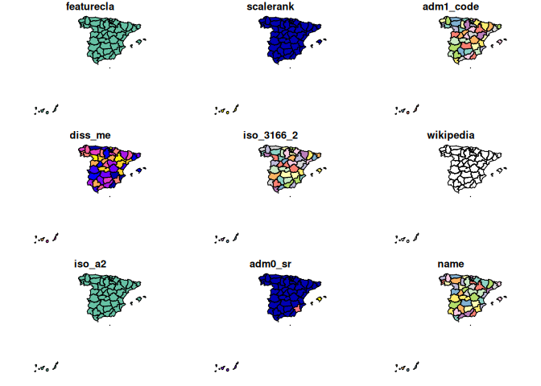

An R package to hold and facilitate interaction with Natural Earth map data.
This package provides :
access to a pre-downloaded subset of Natural Earth v4.1.0 (March 2018) vector data commonly used in world mapping
easy subsetting by countries and regions
functions to download other Natural Earth vector and raster data
a simple, reproducible and sustainable workflow from Natural Earth data to rnaturalearth enabling updating as new versions become available
clarification of differences in world maps classified by countries, sovereign states and map units
consistency with Natural Earth naming conventions so that rnaturalearth users can use Natural Earth documentation
data in
sforsvformats
The Natural Earth website structures vector data by scale, category and type. These determine the filenames of downloads. rnaturalearth uses this structure to facilitate download (like an API).
Install rnaturalearth
Install from CRAN :
install.packages("rnaturalearth")or install the development version from GitHub using pak.
pak::pkg_install("ropensci/rnaturalearth")Data to support much of the package functionality are stored in two data packages that you will be prompted to install when required if you do not do so here.
pak::pkg_install("ropensci/rnaturalearthdata")
pak::pkg_install("ropensci/rnaturalearthhires")First usage
Here using plot as a simple, quick way to plot maps. Maps could also be made with ggplot2, tmap or other options. All retrieval functions accept an argument returnclass = "sf" to return package sf (Simple Features) or returnclass = "sv" (SpatVector) objects.
library(rnaturalearth)
# world countries
plot(ne_countries())
Warning: plotting the first 9 out of 168 attributes; use max.plot = 168 to plot
all
# uk
plot(ne_countries(country = "united kingdom"))
Warning: plotting the first 10 out of 168 attributes; use max.plot = 168 to
plot all
# states, admin level1 boundaries
plot(ne_states(country = "spain"))
Warning: plotting the first 9 out of 121 attributes; use max.plot = 121 to plot
all
Introductory vignette
vignette("rnaturalearth", package = "rnaturalearth")To download Natural Earth data not already in the package
There are a wealth of other data available at the Natural Earth website. rnaturalearth has functions to help with download of these data.
The data available are outlined in the two tables below and online here.
Specify the scale, category and type of the vector you want as in the examples below.
# lakes
lakes110 <- ne_download(scale = 110, type = "lakes", category = "physical")
plot(lakes110)
# rivers
rivers50 <- ne_download(
scale = 50,
type = "rivers_lake_centerlines",
category = "physical",
returnclass = "sf"
)
library(ggplot2)
library(sf)
ggplot(rivers50) +
geom_sf() +
theme_minimal()Details of different country definitions and scales
vignette("what-is-a-country", package = "rnaturalearth")Reproducible download of Natural Earth data into the package
Script used to get data into the accompanying data packages.
Errors in the data?
If you believe there is an issue with data provided by Natural Earth, please do not report it here. We are not responsible for the accuracy or maintenance of Natural Earth data. For any concerns regarding this data, please contact Natural Earth.
Acknowledgements
Thanks to Lincoln Mullen for code structure inspiration from USAboundaries, Hadley Wickham for comments and prompting, Bob Rudis for answers to stackoverflow questions about downloading Natural Earth data into R. The Natural Earth team and Nathan Kelso for providing such a great resource.
Potential future work
Potential additional data
- Country synonyms lookup
- dataframe with ISO3 and country synonyms
- similar to https://github.com/AndySouth/rworldmap/blob/master/data/countrySynonyms.rda
- Country larger regions lookup
- dataframe with ISO3 and membership of different regional groupings, e.g. continent, least developed countries etc.
- similar to https://github.com/AndySouth/rworldmap/blob/master/data/countryRegions.rda
Potential additional functions
- facilitate joining of user data to country boundaries
- similar to https://github.com/AndySouth/rworldmap/blob/master/R/joinCountryData2Map.R
- … but with a better name
- similar allowing of join by ISO codes or names, with attempted synonym matching
- similar reporting of country joining success and failure
- facilitate subsetting by country groupings
- e.g. least developed countries etc.